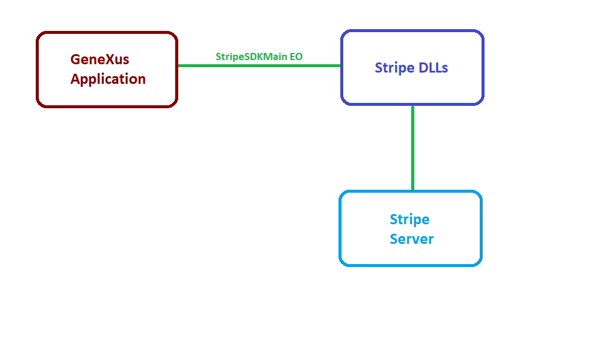

"Stripe is an American technology company operating in over 25 countries that allows both private individuals and businesses to accept payments over the Internet. Stripe focuses on providing the technical, fraud prevention, and banking infrastructure required to operate on-line payment systems." Stripe SDK allows you to integrate Stripe platform to your applications in a simple and fast way. How does it work? GeneXus uses an External Object to integrate with Stripe's C# SDK, which allows applications to communicate with Stripe servers and access its functionality.  |